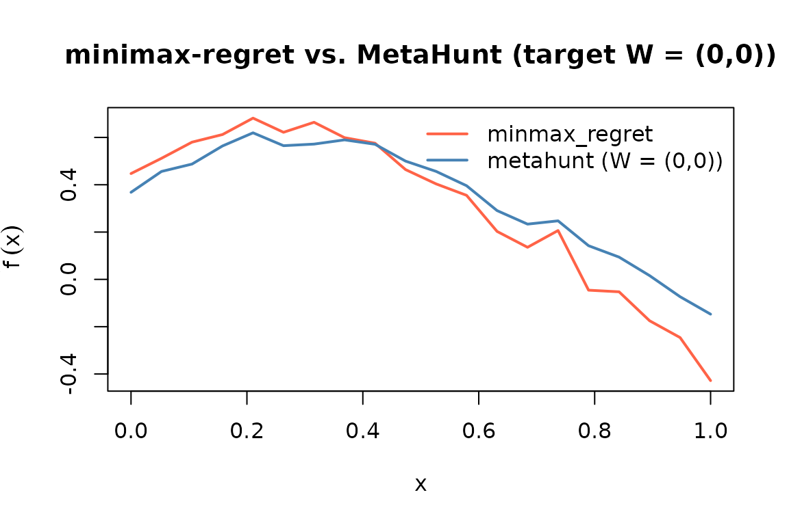

What minmax_regret() does
minmax_regret() is a second top-level method exported by
MetaHunt that does not use study-level covariates
W. It treats each source-site function as a candidate
target and returns the convex combination of source functions that
minimises worst-case regret across the source pool. The framing is
adversarial: rather than predicting for a specific new metadata profile,
it produces a single aggregator that is robust to the worst-case choice
of true target inside the source convex hull. See Zhang, Huang, &
Imai (2024) for the underlying theory.
When to use which
Use metahunt()
|
Use minmax_regret()
|
|---|---|
You have many studies (m
) |
Few studies and/or unreliable metadata |
Study-level covariates W are informative |
No W, or W doesn’t predict
heterogeneity |
You want predictions for specific new populations
characterized by W_0
|
You want a single worst-case aggregator across the source pool |
| Random effects driven by latent structure | Adversarial / robustness framing |
A small standalone simulation
m <- 30; G <- 20; K_true <- 3
x <- seq(0, 1, length.out = G)
basis <- rbind(sin(pi * x), cos(pi * x), x)
W <- data.frame(w1 = rnorm(m), w2 = rnorm(m))
beta <- cbind(c(1, -0.8), c(-0.5, 1.2), c(0, 0))
pi_true <- exp(as.matrix(W) %*% beta); pi_true <- pi_true / rowSums(pi_true)
F_hat <- pi_true %*% basis + matrix(rnorm(m * G, sd = 0.05), m, G)
W_new <- data.frame(w1 = 0, w2 = 0)Running minmax_regret()
mm <- minmax_regret(F_hat)
mm
#> Minimax-regret aggregator (Zhang, Huang & Imai 2024)
#> m (sources): 30
#> G (grid size): 20
#> ridge: 1e-10
#> prediction: function on grid (length 20 )
#> top weights:
#> source 15: q = 0.5000
#> source 26: q = 0.5000
#> source 10: q = 0.0000
#> source 17: q = 0.0000
#> source 14: q = 0.0000Visual comparison: minmax_regret vs
metahunt
To compare, fit metahunt() and predict at the single new
metadata row.
fit <- metahunt(F_hat, W, K = K_true, dfspa_args = list(denoise = FALSE))
f_pred <- predict(fit, newdata = W_new)Now overlay the two predictions on the shared grid.
plot(x, mm$prediction, type = "l", col = "tomato", lwd = 2,
ylim = range(c(mm$prediction, f_pred[1, ])),
xlab = "x", ylab = expression(tilde(f)(x)),
main = "minimax-regret vs. MetaHunt (target W = (0,0))")
lines(x, f_pred[1, ], col = "steelblue", lwd = 2)
legend("topright", legend = c("minmax_regret", "metahunt (W = (0,0))"),
col = c("tomato", "steelblue"), lty = 1, lwd = 2, bty = "n")
Small-m users
With
m < 10, both methods can still run but conformal intervals aroundmetahunt()will be wide because the calibration set is small. We recommend reporting bothmetahunt()andminmax_regret()and treating large disagreement between them as a signal that the metadata is not informative enough to support a covariate-specific prediction — which is exactly the regime where the worst-case aggregator is the more honest answer.
See also
-
vignette("metahunt-intro", package = "MetaHunt")— the broader pipeline and assumptions. -
vignette("conformal-prediction", package = "MetaHunt")— for the small-mcalibration caveat referenced above. -
?minmax_regret— the worst-case-regret aggregator.